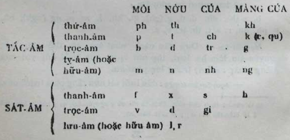
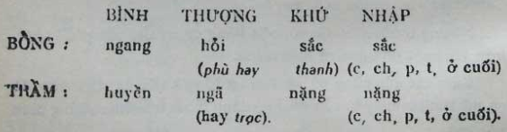

Âm là những yếu-tố đầu-tiên dùng để tạo nên tiếng. Ta thường chia các âm làm nguyên-âm và phụ-âm.
- Nguyên-âm có thể đứng một mình trong lời nói. Trái lại, phụ-âm chỉ có thể dùng ghép với một hoặc nhiều nguyên-âm. Phụ-âm bao giờ cũng tùy-thuộc nguyên-âm. Việt-ngữ có 12 nguyên-âm 13 : a, ă, â, e, ê, i, y, o, ô, ơ, u, ư và hai mươi ba phụ-âm : b, c (k), ch, d, đ, g (gh), gi, kh, l, m, n, ng (ngh), nh, p, ph, qu, r, s, t, th, tr, v, x.
Nguyên-âm : Dựa vào cách phát-âm, có thể chia các nguyên-âm làm ba loại, tùy nơi vị-trí của lưỡi đối với cúa (tiếng Pháp : palais ) trong lúc phát-âm.
- nguyên-âm trước : đầu lưỡi sát nướu răng phía trước cúa.
- nguyên-âm giữa : lưng lưỡi giơ lên lối giữa cúa.
- nguyên-âm sau : lưng lưỡi thụt ra sau gần cúa mềm.
Mỗi loại lại có thể phát-âm bằng ba cách : hẹp, trung và rộng.
Có thể phân-loại các nguyên-âm theo bảng kê sau đây :
TRƯỚC – GIỮA – SAU
HẸP – i (y) – ư – u
TRUNG – ê – ơ (â) – ô
RỘNG – e – a (ă) – o
Phụ-âm : Các phụ-âm có thể chia làm hai loại chính tùy nơi luồng âm bị chận tạm trong miệng ( tắc-âm ) hay bị ép sát gần cúa ( sát-âm ) trước khi phát ra thành tiếng. Dựa vào chỗ và cách phát-âm, lại có thể phân mỗi loại chính ra làm những :
- âm môi : do hai môi cử-động ;
- âm nướu : do đầu lưỡi cử-động ;
- âm cúa : lưng lưỡi giơ sát cúa ;
- âm màng cúa : chân lưỡi thụt gần họng.
Có thể liệt-kê các phụ-âm vào bảng dưới đây :

Việc phân-loại các nguyên-âm và phụ-âm như trên rất cần-thiết trong sự áp-dụng luật tương-đồng đối-ứng để tìm từ-nguyên của các tiếng nói trại. Ví-dụ :
- Các tiếng Hán-Việt : phù, muộn, bổn, vọng đã nói trại thành những tiếng Nôm : hòa, buồn, vốn, mong (vì các phụ-âm ph, m, b, v cùng thuộc loại âm môi).
- Các tiếng Hán-Việt : hấp, trú, phòng, chung đã nói trại thành những tiếng Nôm hút, trọ, buồng, chuông (vì các nguyên-âm â, u, o, uô cùng thuộc loại nguyên-âm sau).
II. VẦN
Mỗi nguyên-âm có thể kể là một vần đơn (ngoại-trừ các nguyên-âm ă, â, i). Ngoài ra ta có thể tạo-thành vần, bằng cách :
- ghép hai hoặc ba nguyên-âm lại : ai, ay, ao, au, âu, eo, ui, ưu, uôi, uây…
- ghép một hoặc hai nguyên-âm với một phụ-âm : ac, am, an, ang, anh, im, in, ich, inh, iêng, uông, ương…
- ghép ba nguyên-âm với một phụ-âm : uyên, uyết…
Nhiều vần tự nó đã có thể làm nên một tiếng. Ví dụ : ư, ai, ân, anh, em, in…
Nhưng thường muốn có một tiếng có nghĩa, vần phải phối-hợp với một phụ-âm và một thinh.
Giữa các vần cũng có sự tương-đồng khiến ta dựa vào đó có thể tìm từ-nguyên của những tiếng Nôm tạo-thành bằng cách nói trại.
Ví-dụ : Ta biết rằng các tiếng Nôm bằng, giêng (tháng giêng), dừng, sống, thước, chiếc do các tiếng Hán-Việt bình, chính (chính nguyệt) , đình, sinh, xích, chích. Do đó ta suy ra chỗ tương-đồng giữa vần inh với các vần ăng, iêng, ưng, ông , giữa vần ich với các vần ươc, iêc .
Dựa vào hai sự tương-đồng này, có thể tìm từ-nguyên của một số tiếng Nôm. Chẳng hạn : thằng do tiếng Hán-Việt đinh ; chừng (đỗi) do tiếng Hán-Việt trình (độ).
Nhận-thức được sự tương-đồng giữa các vần inh và ich , in và it , ta sẽ thấy rằng nếu một tiếng Nôm có vần inh tiếng đệm của nó sẽ có vần ich , nếu một tiếng Nôm có vần in , tiếng đệm của nó sẽ có vần it hay ngược lại.
- phình-phịch ; bình-bịch,
- in-ít, kìn-kịt.
III. THINH
Việt-ngữ có tất cả tám thinh : ngang, huyền, hỏi, ngã, sắc, nặng, sắc nhập (những tiếng dấu sắc có c, ch, p, t ở cuối) và nặng nhập (những tiếng dấu nặng có c, ch, p, t ở cuối).
Tám thinh ấy chia làm hai bậc chính : bổng và trầm . Ở mỗi bậc có 4 giọng : bình, thượng, khứ, nhập :

Thật ra trong tám thinh của ta, chỉ có ba giọng chính : ngang, huyền và sắc . Các giọng hỏi, ngã, nặng đều do sự tổ-hợp của những giọng chính ấy :
- hỏi = huyền + sắc ; hỏi = hòi… ói.
- ngã = huyền + nặng + sắc ; ngã = ngà… ạ.ạ.á.
- nặng = huyền + ngang ; nặng = nằng… ăng.
Ở tiếng Hán-Việt, có một sự tương-ứng giữa âm khởi-đầu và thinh. Các tiếng khởi-đầu bằng nguyên-âm chỉ thuộc các thinh ngang, hỏi, sắc ; các tiếng khởi-đầu bằng hữu-âm (l, m, n, ng, ngh, nh) và các trọc-âm (d, v) chỉ có thể có dấu ngã, dấu nặng. Ví-dụ :
- ổn, ủy, ải, ảo…
- lễ, mẫu, nghĩa, ngữ, nữ, nhã…
Trong tiếng Nôm cũng như trong tiếng Hán-Việt, các tiếng nói trại tôn-trọng quy-tắc : những tiếng thuộc bậc bổng đi chung và biến-đổi lẫn nhau, những tiếng thuộc bậc trầm đi chung và biến-đổi lẫn nhau. Ví-dụ :
- Biến-đổi lẫn nhau :
HÁN-VIỆT – NÔM
kế (mẫu) – (mẹ) ghẻ
cẩm – gấm
tế – rể
lãnh – lạnh
dị – dễ
NÔM – NÔM
hả miệng – há miệng
mỏng-manh – mong-manh
trở – tr ớ
dẫu – dầu
ngờ – ngỡ
đ ỗ – đậu
- Đi chung với nhau :
TIẾNG CHÍNH – TIẾNG ĐỆM
êm – êm-ả
nhảm – nhảm-nhỉ
ầm – ầm-ĩ
buồn – buồn-bã
vội – vội-vã
(Dĩ-nhiên các quy-tắc suy ra từ luật tương-đồng đối-ứng về âm, vần và thinh đều có những ngoại-lệ).
IV. THÀNH-PHẦN CỦA MỆNH-ĐỀ VÀ NHỮNG TỪ-LOẠI
Khi nói, viết hay nghĩ, ta dùng những tiếng tập-hợp thành mệnh-đề. Một mệnh-đề là một tập-hợp những tiếng để giải trọn một ý về người hay sự-vật. Ví-dụ : Tòa nhà đồ-sộ của hắn sẽ choán cả khu đất rộng trước chợ An-đông. Trong mệnh-đề nầy, ta đã tập-hợp :
1) Những tiếng dùng để mệnh-danh :
- toà nhà, khu đất, chợ An-đông mệnh-danh những vật : đó là những danh-từ .
- đồ sộ, rộng mệnh-danh những tính-cách của sự-vật : đó là những tĩnh-từ. 14
- choán mệnh-danh một hành-động (hay việc xảy ra) : đó là một động-từ .
2) Những tiếng phụ-thuộc vào các tiếng mệnh-danh :
- hắn : thay-thế cho một danh-từ : đó là một đại-danh-từ . 15
- cả : làm rõ nghĩa danh-từ khu : đó là một lượng-số-chỉ-định-từ . 16
- sẽ : làm rõ nghĩa động-từ choán : đó là một trạng-từ . 17
3) Những tiếng chỉ sự tương-quan ý-nghĩa giữa hai tiếng : của và trước : những giới-từ . Danh-từ, tĩnh-từ, động-từ, đại-danh-từ, chỉ-định-từ, trạng-từ, giới-từ là những từ-loại. Vậy, do nơi ý-nghĩa và tác-dụng văn-phạm của chúng, các tiếng trong lời nói được chia làm nhiều từ-loại. Về phương-diện tác-dụng văn-phạm của các tiếng trong lời nói, ta lại phân-biệt trong mệnh-đề các thành-phần sau đây :
a) CHỦ-NGỮ 18 : chỉ người hay sự-vật được nói đến. Trong ví-dụ kể trên, phần nầy là : « tòa nhà đồ sộ của hắn » gồm có :
- danh-từ tòa-nhà, chủ-ngữ của động-từ choán.
- tĩnh-từ đồ-sộ thêm nghĩa cho danh-từ tòa-nhà.
- đại-danh-từ hắn, túc-ngữ của danh-từ tòa-nhà .
b) TUYÊN-NGỮ : cho biết ý-kiến hay sự nhận-xét về người hay sự-vật được nói đến. Trong ví-dụ kể trên, phần nầy là : « sẽ choán cả khu đất rộng trước chợ An-đông » gồm có :
- động-từ choán là yếu-tố chính.
- trạng-từ sẽ phụ nghĩa cho động-từ choán.
- danh từ khu đất , làm sự-vật túc-ngữ của động-từ choán .
- danh-từ chợ An-đông, túc-ngữ của danh-từ khu-đất .
Để lập thành chủ-ngữ và tuyên-ngữ của các mệnh-đề, ta dùng những tiếng thuộc các từ-loại sau đây : Danh-từ, Loại-từ, Chỉ-định-từ, Đại-danh-từ, Tĩnh-từ, Động-từ, Trạng-từ, Giới-từ, Liên-từ, Thán-từ.